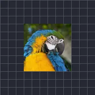

摆动

使图层沿指定角度、纵深或轨道往复移动。
往复运动会让图层自行前后移动。方向可选择沿角度移动、在深度方向移动，或绕轨道轨道移动。频率是每秒往复的次数，幅度是移动的距离，波形为正弦（平滑）或三角形（速度稳定）。使用相位可让多个图层错开，使它们不会同步移动。
设置
| 设置项 | 类型 | 范围 | 默认值 |
|---|---|---|---|
| 方向 | 选项 | 角度，深度，轨道 | 角度 |
| 角度 | 角度 | -3600° 至 3600° | 45° |
| 频率 | 数字 | 0 Hz 至 16 Hz | 2 Hz |
| 幅度 | 数字 | 0 至 4000 | 25 |
| 波形 | 选项 | 正弦波，三角波 | 正弦波 |
| 相位 | 数字 | 0 至 1000 | 0 |